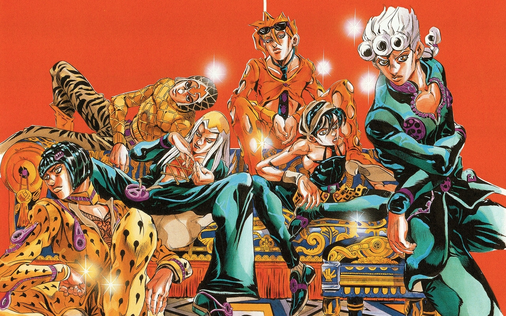

Приветствуем!
Этот сайт для рекламы и продажи манги JoJo's Bizarre Adventure
Краткое описание
JoJo's Bizarre Adventure — серия выпусков манги, автором и иллюстратором которой является Хирохико Араки. С 1987 по 2004 год серия публиковалась в журнале Weekly Shonen Jump, затем выпуск глав был перенесён в ежемесячный сэйнэн-журнал Ultra Jump. JoJo’s Bizarre Adventure является второй в числе крупнейших серий манги издательства Shueisha и включает в себя 131 том, уступая лишь Kochikame, состоящей из 200 томов.
История восьми частей манги разворачивается вокруг приключений Джонатана Джостара и его потомков: каждая часть представляет читателю отдельную историю и нового героя, способного применять в бою сверхъестественные силы.

На основе манги были созданы 6 сезонов сериала (2012—2022) производства студии David Production, о котором и пойдёт речь.
Сюжет
Часть 1ː Phantom Blood
Действие происходит в Великобритании, в XIX веке. Молодой сын богатого помещика Джорджа Джостара Джонатан вынужден делить дом вместе с новым сводным братом — Дио Брандо. Тот в свою очередь намеревается заполучить наследство, по праву принадлежащее Джонатану. После тщетных попыток Дио обращается в вампира, надевая на себя таинственную маску, убивает Джорджа и сжигает поместье. Джонатан отправляется в путешествие и находит новых союзников, осваивая боевую технику «хамон», с помощью которой можно победить нежить, в том числе и Дио с его новыми слугами-мертвецами.

Часть 2ː Battle Tendency
Действие переносится в 1938 год. Немецкая экспедиция находит в Мексике среди руин окаменелого человека и оживляет его. Однако нацисты не осознают опасность находки, и пробуждённый «человек-из-колонны» убивает работников лаборатории и сбегает, чтобы затем пробудить ото сна своих собратьев. Вместе они намереваются вернуть господство над человечеством. Древним вампирам должен противостоять Джозеф Джостар, главный герой и внук Джонатана Джостара. Джозеф объединяется с новыми союзниками и осваивает навык владения боевой техникой «хамон», так как только с помощью хамона возможно уничтожить тело вампира.

Часть 3ː Stardust Crusaders
Действие происходит в 1989 году. Дио Брандо пробуждается от долгого сна, когда саркофаг с его телом был вытащен рыбаками со дна Атлантического океана. Становится ясно, что Дио сумел захватить тело Джонатана. По этой причине у всех потомков Джонатана пробуждаются «стенды». Их получают Джозеф Джостар, его дочь Холли Кудзё и внук Дзётаро Кудзё. Холли, однако, не может справиться со своей новой силой, и ей остаётся жить не более 50 дней. Единственный способ спасти Холли — убить Дио до истечения данного срока. Так Джозеф, Дзётаро и их новые союзники отправляются в путешествие через страны Средней Азии и сталкиваются по пути с приспешниками Дио.

Часть 4ː Diamond Is Unbreakable
Действие происходит в Японии в 1999 году. Семья Джостаров узнаёт, что у Джозефа есть внебрачный сын — Дзёсукэ Хигасиката, который проживает в японском городе Морио. Сам Дзёсукэ вскоре узнаёт о наличии в городе артефактов — «лука и стрелы», способных делать из людей новых носителей стендов. По мере поисков артефактов, Дзёсукэ и его новые союзники, в том числе приехавший в город Дзётаро Кудзё, узнают о более серьёзной угрозе в лице серийного убийцы Ёсикагэ Киры и владельца стенда, который не оставляет никаких следов после себя.

Часть 5ː Golden Wind
Действие происходит в Италии, в Неаполе, в 2001 году. Главным героем становится Джорно Джованна, который формально является сыном Дио Брандо, но биологическим потомком Джонатана Джостара. Джорно хочет стать боссом мафии, чтобы избавиться от наркоторговцев, продающих наркотики детям. Команда, к которой он присоединяется, состоит из носителей стендов, должна бороться против босса мафии Дьяволло и защищать его дочь — Трис Уну, которую Дьяволо намеревается убить, чтобы скрыть свою личность.
Часть 6ː Stone Ocean
Действие происходит в 2011 году, в порту Сент-Люси, во Флориде. Дочь Дзётаро Кудзё — Джолин Кудзё — сажают в тюрьму из-за несчастного случая. В заключении девушка сталкивается с таинственным стендом Уайт Снейком, действующим без хозяина и способным забирать у цели «стенд и душу», обрекая её на кому и затем смерть. Его очередной жертвой становится Дзётаро, прибывший в тюрьму, чтобы забрать оттуда Джолин. Героиня должна скорее спасти отца и для этого объединяется с другими заключёнными, обладающими стендами.

Часть 7ː Steel Ball Run
Это альтернативная история, не связанная с предыдущими частями JoJo, является интерпретацией первой части Phantom Blood. Многие персонажи являются инкарнациями героев из первых шести частей франшизы. Действие этой истории происходит в 1890-е годы в США, во время международных скачек на лошадях. Победителю обещана награда в 50 миллионов долларов. Сюжет представляет двух главных героев — Джайро Цеппели и Джонни Джостара, которые также принимают участие в гонках. За гонками следит президент США Фанни Валентайн, который намеревается найти святые мощи, способные расширять силы стенда носителя. С помощью новой силы Валентайн хочет сделать США сильнейшей державой мира. Однако мощи находят Джайро и Джонни, и теперь главные герои должны защищаться от тайных агентов, работающих на президента.

Часть 8ː JoJolion
Действие происходит в 2011 году в Японии. Сюжет является интерпретацией четвёртой части Diamond Is Unbreakable. В вымышленном городе Морио в результате землетрясений и цунами стали появляться возвышенности неясной природы с симметричными отверстиями. Молодая девушка по имени Ясухо Хиросэ находит под завалами молодого человека, страдающего амнезией, и называет его «Дзёсукэ». Главный герой пытается раскрыть тайну своего прошлого и узнаёт, что является слиянием двух разных людей. Дальнейшее изучение своего прошлого приводит главного героя к тому, что он сталкивается с деятельностью преступного синдиката в городе, который продаёт плоды таинственного дерева рокакака, способные исцелять людей и «забирать» что-то взамен.

Популярность
Только в Японии было продано более 80 миллионов танкобонов JoJo’s Bizarre Adventure. По данным на 2012 год, JoJo’s Bizarre Adventure была самой длинной мангой в мире, не имевшей на тот момент собственной адаптации телевизионного аниме-сериала. Манга занимает шестое место в списке самых продаваемых в истории по версии Weekly Shonen Jump. Информационный сайт IGN присвоил ей рейтинг «стоит читать», назвав произведение увлекательным на фоне общей массы современной манги. По мнению сайта, JoJo осталась такой же уникальной, какой была 15 лет назад, на пике своей популярности. Стиль персонажей и особенности сюжета во многом схожи с другими произведениями, такими как Street Fighter и Fist of the North Star. На десятом японском фестивале медиа-искусства, по результатам опроса фанатов, JoJo’s Bizarre Adventure заняла второе место в списке самых популярных манг за всю историю. Также по результатам опроса компании Oricon «На основе какой манги следует создать игру?», JoJo’s Bizarre получила десятое место. В 2013 году, по результатам опроса издания Kono Manga ga Sugoi!, последняя франшиза JoJo’s Bizarre — JoJolion — заняла двенадцатое место в списке лучших манг для читателей мужского пола, а среди самых продаваемых манг в Японии (в течение первой недели после выпуска) первый том JoJolion занял второе место, второй том — третье место, а третий том — снова второе место. Первые три тома стали одними из самых продаваемых изданий в Японии в 2012 году. В 2018 году, по результатам выбора редакции Comicbook, JoJo заняла третье место в списке лучших произведений в истории журнала Weekly Shonen Jump.

Серия аниме-экранизаций производства David Production, выпускающаяся с 2012 года стала прорывом для франшизы Jojo. Сама же студия благодаря этому сумела пробиться в высшую лигу в аниме-индустрии. Успех был обусловлен в целом высоким качеством выпущенных аниме-сериалов и их уваженимем к сюжету манги-первоисточника. Попытки экранизировать Jojo предпринимались и раньше другими студиями, но с переменным успехом. Выпуск каждого сезона становится громким событием, а сами серии интернет-пользователи расхватывают на цитаты, нарезки и интернет-мемы. В итоге о франшизе узнают и те, кто не интересуется ею или даже японской анимацией в целом. Крис Стакмэнн в своей книге Anime Impact, вышедшей в 2018 году, описывая выросшую за последние несколько лет фанатскую аудиторию, отметил, что представители фэндома JoJo отличаются от других сообществ своим энтузиазмом, сплочённостью, а также общей удовлетворённостью франшизой, чего лишены большинство крупных фанатских сообществ. Помимо этого фанаты JoJo создают большое количество тематических артов и имеют множество общих тем для обсуждения, например, «кем является их любимый персонаж, или стенд, или какая часть хуже или лучше». Тем не менее излишняя верность франшизе JoJo приводит в некоторых случаях к агрессии фанатов, направленной против тех, кто критикует серию манги в целом или демонстрирует к ней своё равнодушие.
Манга


Автор
Автором манги является Хирохико Араки

При создании манги Араки вдохновлялся Рэмбо и Терминатором. Франшиза JoJo завоевала большую популярность далеко за пределами Японии, и новые серии продолжают выходить по сей день. Концепция сражений против вампиров и прочей нечисти с применением силы хамон была заменена на сражения с применением силы стендов, и Араки придерживается подобной концепции по сей день. За 30 лет выпуска манги, по состоянию на декабрь 2016 года, по всему миру было продано 100 миллионов копий манги. Третья часть, «Stardust Crusaders», считается самой известной во всей франшизе. Манга была несколько раз экранизирована, а сюжет использовался в ряде видеоигр.